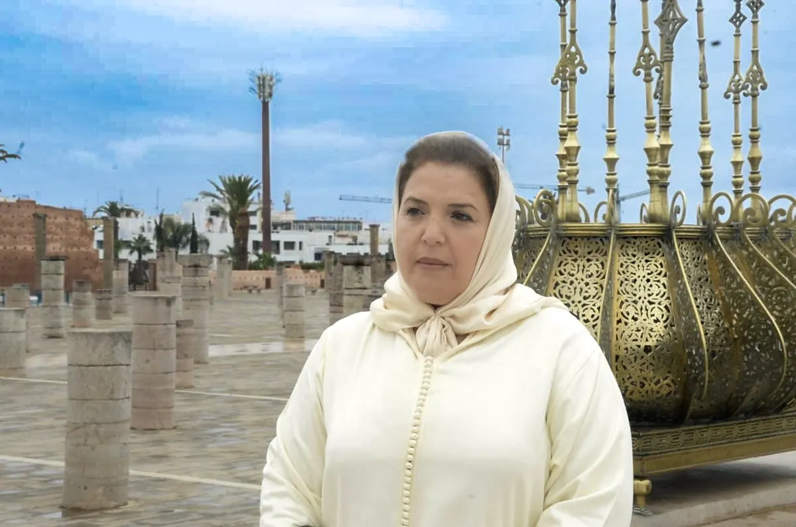

أؤمن بمغرب تلتقي فيه الكلمة بالمسؤولية، وتُبنى فيه السياسة على الكرامة لا على الامتياز. رؤيتي تنبع من يقين راسخ: لا تنمية حقيقية دون عدالة، ولا ديمقراطية ناضجة دون مشاركة فعلية لكل المواطنات والمواطنين، بصرف النظر عن جنسهم أو أصلهم أو موقعهم الجغرافي.
مغرب يُنصف نساءه
أحمل حلم مغرب يُنصف نساءه، لا بمنطق الكوطا والمقاعد المحجوزة، بل بإدماج فعلي للمرأة في مراكز القرار وصنع السياسات، لأن نصف المجتمع الذي يظل على الهامش لا يمكنه أن يبني وطناً متكاملاً.
إنصاف النساء يبدأ من القانون، بمدونة أسرة عادلة تحمي الكرامة وتضمن المساواة، ويمتد إلى الاقتصاد والتعليم والحياة العامة، حيث ما زالت كفاءات نسائية كثيرة تنتظر أن تُفتح أمامها الأبواب. المناصفة في نظري ليست مطلباً فئوياً، بل شرط من شروط الديمقراطية نفسها.
مغرب يحتضن شبابه
أحمل حلم مغرب يحتضن شبابه ويمنحه الأفق، شباب يجد في وطنه ما يبحث عنه من معنى وفرصة ومستقبل، فلا يضطر إلى البحث عنه في ضفاف أخرى.
شباب اليوم لا يطلب الوصاية، بل يطلب الثقة والإنصات والمشاركة الفعلية. وحين يُمنح الأدوات والفضاءات الكافية، يصبح فاعلاً في بناء وطنه لا هامشاً فيه، وتصبح طاقته رصيداً للمستقبل بدل أن تتحول إلى إحباط أو هجرة.

مغرب يتصالح مع هويته
أحمل حلم مغرب يتصالح مع هويته الغنية المتعددة الأبعاد، عربية وأمازيغية وأندلسية وصحراوية وعبرية ومتوسطية وإفريقية وإنسانية، لا بوصفها مصدر توتر أو خلاف، بل بوصفها ثروة حضارية متراكمة عبر القرون، تُميّز المغرب وتجعل منه نموذجاً فريداً للتعايش والتسامح والانفتاح.
مغرب لا يترك أحداً خلفه
أحمل حلم مغرب يرفض أن يترك أحداً خلفه، مغرب يحارب الفقر والأمية والهشاشة ليس بوصفها ملفات إدارية، بل بوصفها جرحاً في جسد الوطن يستوجب معالجة عاجلة وإرادة سياسية حقيقية.
العدالة الاجتماعية تعني أيضاً العدالة المجالية: أن يحظى المواطن في الجبل والقرية والمدينة الصغيرة بالحقوق نفسها في التعليم والصحة والشغل، وأن تُقاس السياسات العمومية بأثرها الفعلي على حياة الناس لا بعدد البرامج المعلنة.
أحمل حلم مغرب يُنصف نساءه، لا بمنطق الكوطا والمقاعد المحجوزة، بل بإدماج فعلي للمرأة في مراكز القرار.
مغرب يخوض ثورة المعرفة
أحمل حلم مغرب يخوض ثورة المعرفة والتكنولوجيا بقدم راسخة، مغرب يُعدّ أبناءه لعالم رقمي متحول، ويُحوّل التحديات التكنولوجية إلى فرص حقيقية للإقلاع الاقتصادي والاجتماعي.
ثورة المعرفة تمر عبر مدرسة عمومية قوية وجامعة منفتحة على البحث والابتكار، لكنها تتطلب أيضاً يقظة أخلاقية: فالتكنولوجيا، والذكاء الاصطناعي خصوصاً، يجب أن تبقى في خدمة الإنسان والديمقراطية، وأن تحمي النساء والفئات الهشة من أشكال العنف والتضليل الرقمي.
مغرب يأخذ موقعه في العالم
أحمل حلم مغرب ناشئ يأخذ موقعه الذي يستحقه في النظام العالمي الجديد، مغرب لا يكتفي بدور المتفرج على صياغة القرارات الكبرى، بل يُسهم في رسمها بوصفه قوة إقليمية صاعدة، تمتلك رصيداً دبلوماسياً راسخاً، وعمقاً إفريقياً استراتيجياً، وموقعاً جغرافياً يربط الشمال بالجنوب والشرق بالغرب، مغرب يؤهّل نفسه لأن يكون شريكاً لا تابعاً، ومحاوراً لا مُستقبِلاً للقرارات.
أفق ممكن
هذا المغرب الذي أحمله في قلبي ليس وهماً، إنه أفق ممكن، مشروط بسياسة تضع المواطن في مركزها، ونخب تؤمن بأن الخدمة العامة تكليف لا تشريف، وبناء دولة القانون ممارسة يومية لا تقبل الاستثناء.